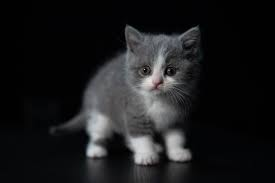

고양이 고양이
고양이 고양이고양이 고양이고양이 고양이고양이 고양이고양이 고양이고양이 고양이고양이 고양이고양이 고양이
고양이 고양이고양이 고양이고양이 고양이고양이 고양이고양이 고양이고양이 고양이고양이 고양이고양이 고양이고양이 고양이고양이 고양이고양이 고양이고양이 고양이고양이 고양이고양이 고양이고양이 고양이고양이 고양이고양이 고양이
고양이 고양이고양이 고양이고양이 고양이고양이 고양이고양이 고양이고양이 고양이고양이 고양이고양이 고양이고양이 고양이고양이 고양이고양이 고양이고양이 고양이고양이 고양이고양이 고양이고양이 고양이
이 텍스트는 이미지 주위로
고양이 고양이고양이 고양이고양이 고양이고양이 고양이고양이 고양이고양이 고양이고양이 고양이고양이 고양이고양이 고양이고양이 고양이고양이 고양이고양이 고양이
고양이 고양이고양이 고양이고양이 고양이고양이 고양이고양이 고양이고양이 고양이고양이 고양이고양이 고양이고양이 고양이고양이 고양이고양이 고양이고양이 고양이고양이 고양이
고양이 고양이고양이 고양이고양이 고양이고양이 고양이고양이 고양이고양이 고양이
이따 여기에도 추가 할 거임
이미지가 오른쪽에 정렬되고 텍스트는 왼쪽으로 흐릅니다
고양이 고양이고양이 고양이고양이 고양이고양이 고양이고양이 고양이고양이 고양이고양이 고양이고양이 고양이고양이 고양이고양이 고양이고양이 고양이
고양이 고양이고양이 고양이고양이 고양이고양이 고양이고양이 고양이고양이 고양이고양이 고양이고양이 고양이고양이 고양이고양이 고양이
고양이 고양이고양이 고양이고양이 고양이고양이 고양이고양이 고양이고양이 고양이고양이 고양이고양이 고양이v